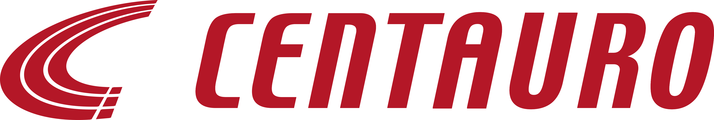
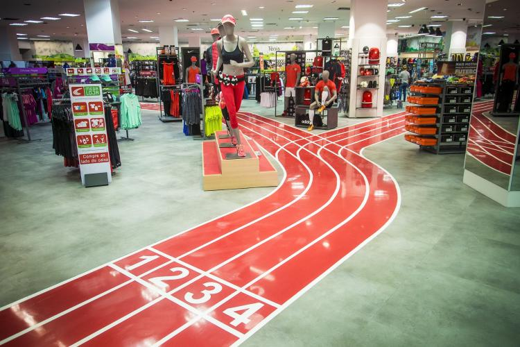
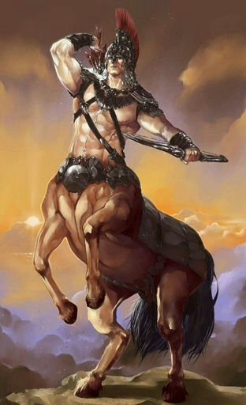
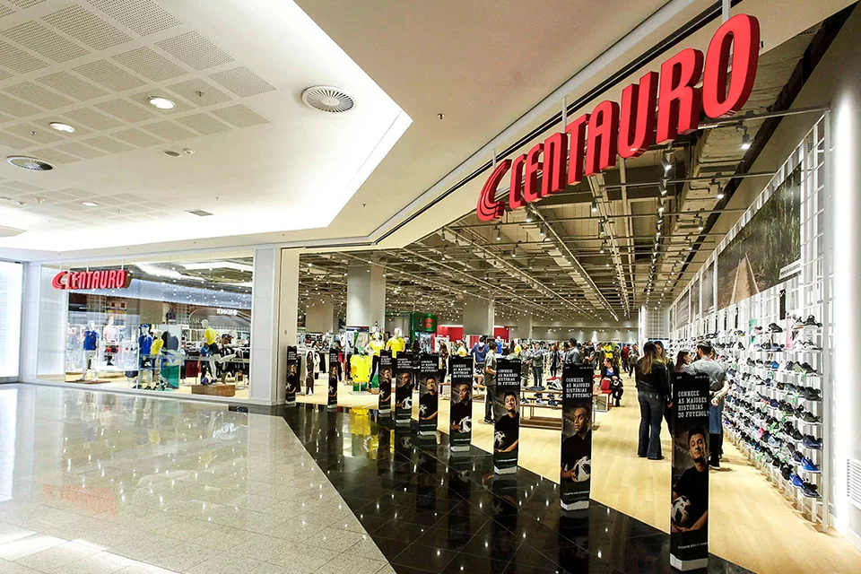
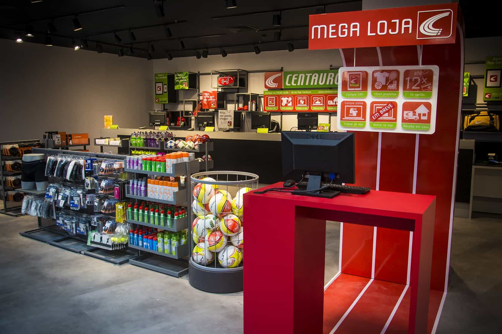
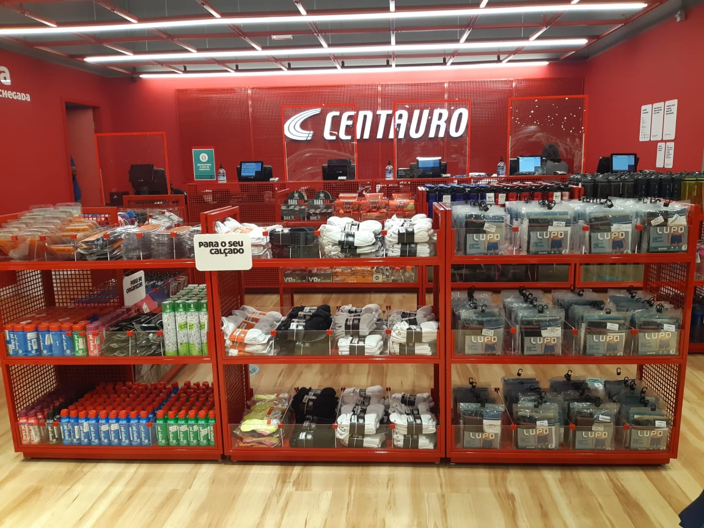
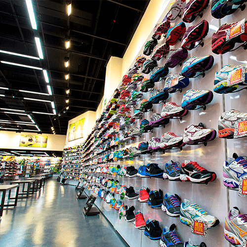
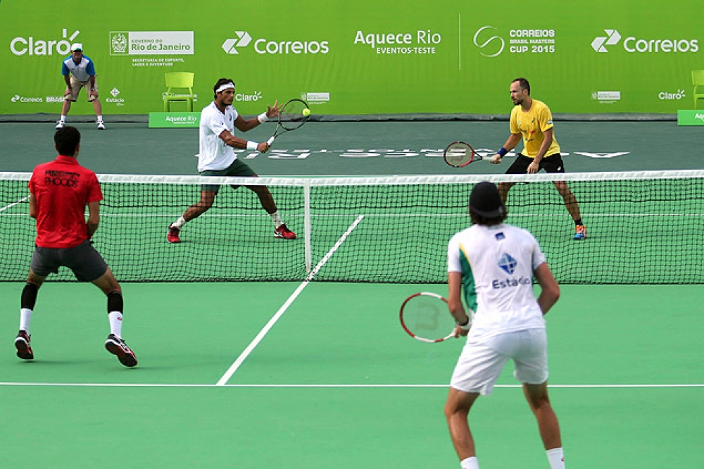
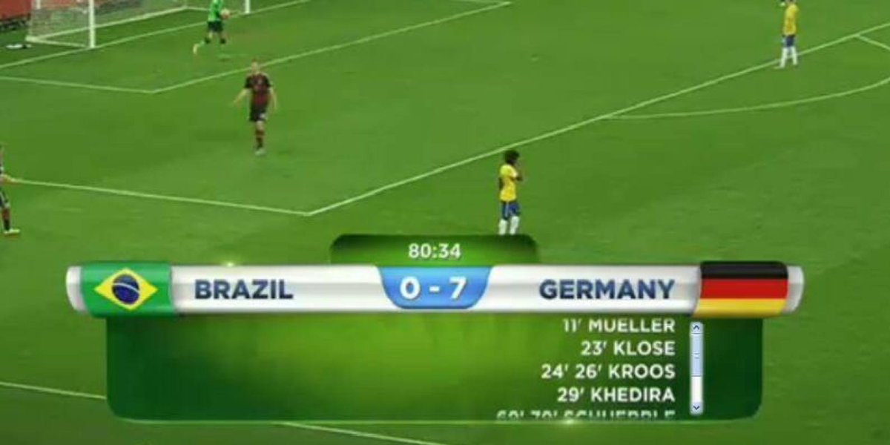

As Lojas Centauro fazem parte de uma rede brasileira multicanal de artigos esportivos. Fundada em abril de 1981 por Sebastião Bomfim Filho com a missão de democratizar o esporte e moda casual no Brasil, a companhia possui mais de 190 lojas em 23 estados do Brasil e Distrito Federal, além de contar com dois centros de distribuição localizados em Extrema, Minas Gerais, e Jarinu, São Paulo.
A Centauro também comercializa produtos por comércio eletrônico e aplicativo para dispositivos móveis. Fundada em 1 de abril de 1981 por Sebastião Bomfim Filho, a primeira loja Centauro foi inaugurada próxima ao bairro Savassi, em Belo Horizonte, Minas Gerais. Surgia então o Grupo SBF, que ainda possui uma rede especializada em tênis, a By Tennis.

Filho de comerciante, Bomfim já trabalhava na loja de tecidos do pai, em Caratinga, interior de Minas Gerais. A oportunidade de mudança para o setor de artigos esportivos aconteceu no início dos anos 80, aos 26 anos, quando notou um crescente hábito na prática de atividades físicas regulares. Nesse período, constatou que mesmo com a paixão dos brasileiros por futebol, não havia nenhuma loja de artigos esportivos no Brasil que transmitisse a energia do esporte. A partir de então, nasceu a primeira loja da Centauro, com uma proposta inovadora, a de democratizar o esporte no país. A inspiração do nome surgiu por conta da figura mitológica do centauro, um ser que soma a inteligência humana com a força e resistência de um animal.

No final dos anos 90, a rede já possuía mais de 22 lojas em Minas Gerais, Rio de Janeiro e em Brasília. As lojas Centauro costumavam ter 200 metros quadrados e o fundador da rede decidiu abrir uma loja com dez vezes esse tamanho, inspirado nas megalojas de livros que faziam sucesso no país. A primeira loja neste novo modelo foi a loja do Shopping West Plaza, em São Paulo, em meados do ano 2000. A partir de então, a marca introduziu um novo exemplar de estabelecimento esportivo no Brasil, as megalojas de produtos esportivos.

Em 2003, três anos depois de estabelecer a primeira megaloja, a Centauro iniciou suas operações no comércio eletrônico, que representa 12% da receita do grupo. No ano de 2009, a empresa inaugurou a sua primeira loja em formato outlet, junto ao centro de distribuição, na cidade de Extrema (MG). Em 2013, a empresa inaugurou um centro de distribuição no estado de São Paulo, na cidade de Jarinu. Nesse mesmo ano, foi aberta a loja Full Size no Rio de Janeiro, uma loja/empreendimento de rua com 3.000 metros quadrados voltados à experiência e interação de clientes com diversas modalidades esportivas.

Dois anos depois, a rede lançou um aplicativo de compras para tablets e smartphones, para sistemas operacionais iOS e Android, o qual permite ao consumidor efetuar compras a partir de dispositivos móveis. Além disso, no mesmo ano, ainda estabeleceu um segundo outlet no Shopping D, em São Paulo (SP). No final de 2015, a empresa chegou ao Mato Grosso para inaugurar sua primeira loja no estado, com 1.500 metros quadrados, em Cuiabá, no Pantanal Shopping. A rede atua em omnichannel (multicanalidade), permitindo o cliente comprar no site ou no aplicativo e trocar o produto na loja física.

1981 – Fundação da primeira loja Centauro em Belo Horizonte (MG).
1995 – Grupo SBF inicia a expansão para outros Estados do Brasil, com inauguração da primeira loja no Rio de Janeiro.
2000 – Inauguração da primeira megastore em São Paulo e a segunda em Brasília.
2003 – Com presença em 10 cidades brasileiras, tem início a operação de comércio eletrônico em http://www.centauro.com.br.
2004 – Fundação do Centro de Serviços na Lapa, São Paulo.
2008 – Com 100 lojas em todo o Brasil, ocorre a transferência de 100% da operação de Back Office para São Paulo. No mesmo período, a companhia inaugura Centro de Distribuição na cidade de Extrema (MG), com área de armazenagem equivalente a 48.000 metros quadrados.
2013 – Inauguração da loja Full Size no Rio de Janeiro e inauguração do centro de distribuição no Estado de São Paulo em Jarinu, com área útil de 16.000 metros quadrados e foi patrocinadora oficial da Copa das Confederações.
2014 - Foi apoiadora Nacional da Copa do Mundo FIFA™ 2014.
2015 – Lançamento do aplicativo de compras para dispositivos móveis; Abertura em outlet no Shopping D em São Paulo (SP); Inaugurada primeira loja no estado do Mato Grosso, na cidade de Cuiabá.
A Centauro é uma das empresas do Grupo SBF, grupo controlado pela Pacipar Participações, que possui 40% do capital da companhia, e pela GP Investments, com 21% de participação. O fundador do Grupo SBF, Sebastião Bomfim Filho (daí o nome do grupo), segue como controlador da empresa. Em dezembro de 2015, a companhia anunciou um novo CEO, Pedro Zemel, que atuava há três anos como diretor comercial da empresa.
Além de ser o maior vendedor brasileiro de marcas como Nike, Adidas e Puma e de comercializar produtos de diversos outros parceiros, como Reebok, Asics, Mizuno e Olympikus, a Centauro possui marcas próprias que complementam seu portfólio: Adams, com artigos de Futebol, Basquete e Tennis; Nord Outdoor, com produtos para Camping; Oxer, que inclui diversos segmentos esportivos (artigos para Academia, Corrida, Natação, Ciclismo, Surf e Casual) e X-Seven, de Skate.

Desde 2007, a empresa é patrocinadora do tenista brasileiro Marcelo Melo, que em 2015 conquistou um feito importante para o país, ao alcançar a primeira posição do ranking mundial de duplistas da ATP (Associação de Tenistas Profissionais). A proposta, feita diretamente pelo fundador e presidente da rede, Sebastião Bomfim Filho, veio nas condições de que o jogador abandonasse a categoria simples e começasse a se dedicar apenas ao tênis de duplas, além de ter um contrato baseado em meritocracia. Na época, Marcelo Melo ocupava a 198º posição no ranking e, a partir de então, contou com todo apoio da Centauro para se desenvolver como atleta profissional.

Na Paraolimpíada de Pequim, em 2008, a companhia patrocinou os atletas deficientes visuais Terezinha Guilhermina, velocista que conquistou um ouro, uma prata e um bronze na competição, e Odair Ferreira dos Santos, ganhador de três medalhas de bronze. Já em 2014, a Centauro foi Apoiadora Nacional da Copa do Mundo FIFA™ 2014. A rede ainda foi Apoiadora Nacional da Copa das Confederações da FIFA em 2013 e patrocinadora da Copa do Brasil durante os anos de 2012 e 2013.

Em seu histórico, já investiu também em patrocínios como o do Campeonato Brasileiro/Série B, o de todos os árbitros da Copa Libertadores da América e da Sul Americana (Conmebol), além das Seleções Africanas de Camarões, Costa do Marfim, Gana e Senegal.
Em 2015, a companhia, que já apoiava mais de 100 corridas de rua, fechou patrocínio com dez assessorias esportivas em sete capitais do país: Run&Fun, em São Paulo, Belo Horizonte e Rio de Janeiro; 4Any1, Find Your Self e Race, em São Paulo; Even Faster, no Rio Grande do Sul; Walter Tuche e Start, no Rio de Janeiro; BPM, em Curitiba; Santiago Ascenço, em Goiânia, e Top Sports, no Distrito Federal. No total, as dez assessorias somaram mais de 3.500 praticantes de esportes. Até hoje, a Centauro já patrocinou diversos eventos de corrida, entre eles Night Run, Circuito das Estações, Circuito Athenas, Circuito Caixa e Venus WRun, além da Meia Maratona Internacional do Rio de Janeiro como apoiadora.

A Centauro ainda é uma das empresas parceiras do Movimento por um Futebol Melhor, que une torcedores, clubes e empresas que apoiam o desenvolvimento dos clubes. Além disso, é uma das apoiadoras do Pacto Pelo Esporte, um acordo setorial que autorregula os investimentos do setor.